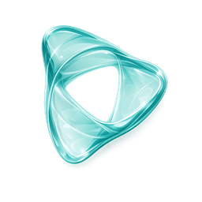

Todas tus herramientas de trabajo en un solo sitio. "Abrir" la usa al momento; "Descargar" crea su icono propio en tu pantalla de inicio.
Instala Savian AppsAñádela a tu pantalla de inicio para abrirla como una app.